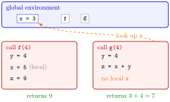

Function Environment¶
Definition¶
An environment is a collection of named objects. Objects you create at the console or in a script live in the global environment. Each call of a function gets a new local environment of its own, which holds the arguments of the call and every object assigned with <- inside the body; it disappears when the call ends.
When the body uses a name, R looks for it in the local environment first. If the name is neither an argument nor assigned locally, R looks in the environment where the function was defined; for a function defined at the top level of a script, that is the global environment. If the name is not found there either, the call stops with the error object 'x' not found.
Interpretation¶
A function call works in its own private room. Whatever it creates there with <-, even under a name that also exists outside, stays in the room and is cleared away when the call returns; only the return value comes out. That is why a function can safely use a local x while your script has its own x.

The figure shows Examples 1 and 2. The call f(4) creates a local x <- 5 and returns 9; the global x is still 3 afterwards. The call g(4) has no x of its own, so the arrow goes out to the global environment, finds x = 3 and returns 7.
Reading a name from outside works, but it makes the result depend on whatever happens to exist in the global environment when the function is called: change or remove the global x and g(4) changes or fails. Passing everything the function needs as an argument removes such hidden dependencies and makes the function easy to test. Arguments themselves are local too: changing an argument inside the body changes only the local copy, never the caller's object (Example 3).
In RStudio the Environment pane shows the global environment; the objects of a function call never appear there, because they exist only while the call runs.
A common mistake is expecting a function to change a global object by assigning to it inside the body. x <- 5 inside f creates a new local x; to change something outside, return the new value and assign it in the caller, as in a <- h(a).
Key Results¶
- Each function call has its own local environment containing its arguments and its local objects.
- Assignment with
<-inside a function creates or changes local objects only; global objects of the same name are untouched. - A name that is not found locally is looked up in the environment where the function was defined, here the global environment.
- Modifying an argument inside a function does not change the object that was passed in.
- Functions that receive all their inputs as arguments behave the same whatever is in the global environment.
Examples¶
1. A local object with a global name. The local x does not overwrite the global one:
2. A hidden dependency. g uses an x it neither receives nor creates:
rm(x)
g <- function(y) {
z <- x + y
z
}
g(4)
#> Error in g(4) : object 'x' not found
x <- 3
g(4)
#> [1] 7
x <- 10
g(4)
#> [1] 14
The same call gives an error, then 7, then 14, depending only on the global x.
3. Arguments are local copies. Changing an argument inside the body does not reach the caller:
h <- function(v) {
v[1] <- 100
v
}
a <- c(1, 2, 3)
h(a)
#> [1] 100 2 3
a
#> [1] 1 2 3
a <- h(a)
a
#> [1] 100 2 3
Only the assignment a <- h(a) in the caller changes a.
4. Removing the dependency. Passing x as an argument makes the result depend on the call alone:
Prerequisites¶
Related Concepts¶
Sources¶
- Programming for EOR · Week 3
- Lecture 3, Part 2 Functions and Recursion, section "Global vs. function environments"
Aliases: local environment, global environment, scope, scoping, local variable, global variable, lexical scoping Keywords: local objects, global environment, lookup outside the function, hidden dependencies
Last updated: 10 November 2026 16:43
Function EnvironmentRecursive FunctionWriting FunctionsObject and AssignmentReturn ValuesDefault Arguments in Your Own FunctionsR and RStudio